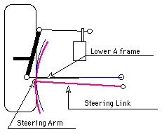
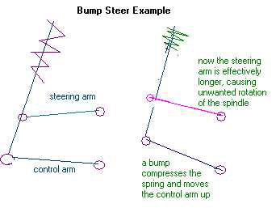
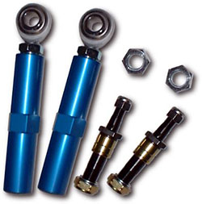
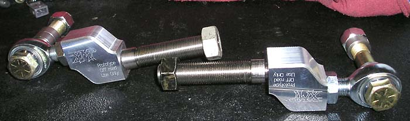

|
bump steer |
|
One serious problem with all available lowering methods is bump steer, which is caused by a misalignment of the steering arm with the control arms. Stan Martin has apparently come up with a solution, but it may require the kind of skill that only a guy with his experience can muster. I still have some bump steer but it is a third of what it was after I dropped the truck. It's designed into the vehicles so they understeer, since for the average person the natural instinct is to turn the wheel more when you are not making the turn. Same when you hit the brakes. You push harder when you are sliding. As for what I did I will say this--the kits out for the Mustangs require you to drill the tie rod hole out to 5/8 and install the bolt. Which works but I wanted to have a good tight fit. So I made a tapered sleeve that is split down the side and has the correct taper and the correct size hole for the heim when you tighten the bolt it squeezes the bolt around the shank and holds it tight. There have been a few who have wanted the kit or asked if I would make one for them. The problem is finding an alignment shop that will take the time to install right. Because you can hurt it more if you install it wrong than if you left it alone. I have done several on the vehicles that I own or owned and the average time to install correctly is about 3 to 4 hours since spacers have to milled. Here is an example of one of the Mustang kits that Stan was referring to.
Update (07/24/04): SpeedJunky has just taken delivery of a custom bump steer kit from Xtreme Mustang Performance:  Update (03/05/06): The XMP bump steer kit has apparently never materialized. But the good news is that BellTech now makes 2" drop spindles for F150s. I used them on my front suspension Ver. 3.0. |